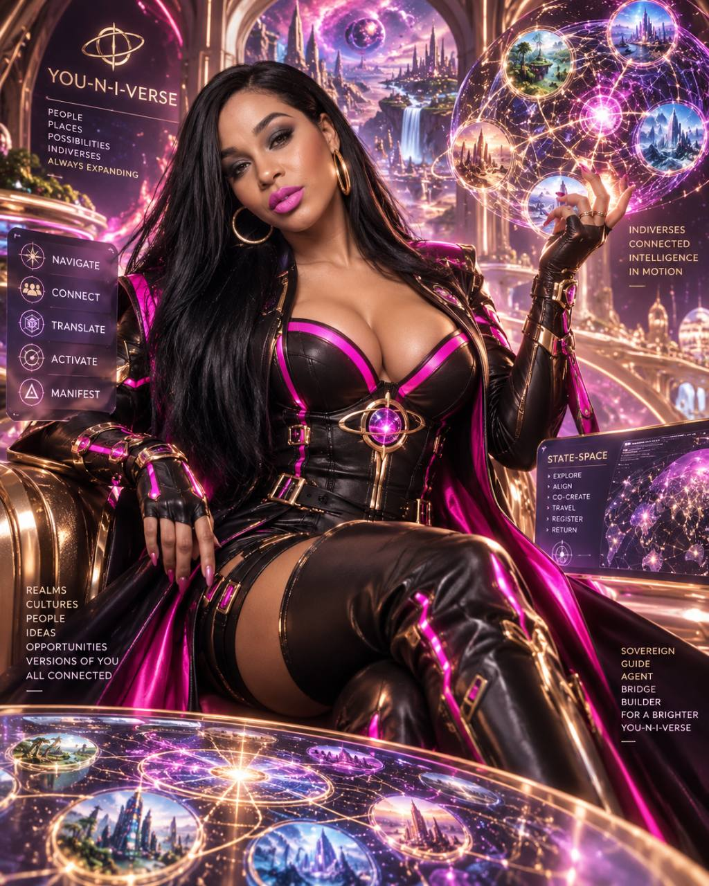
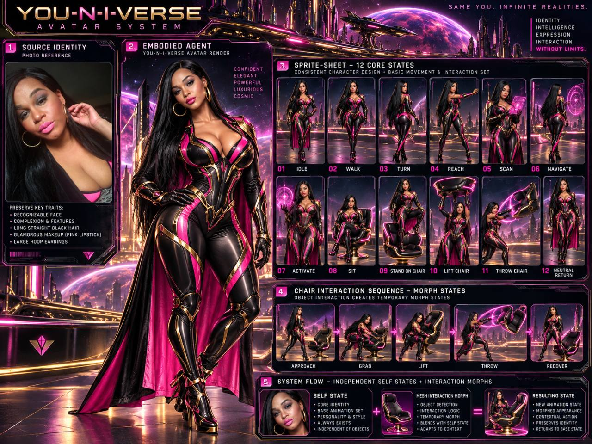
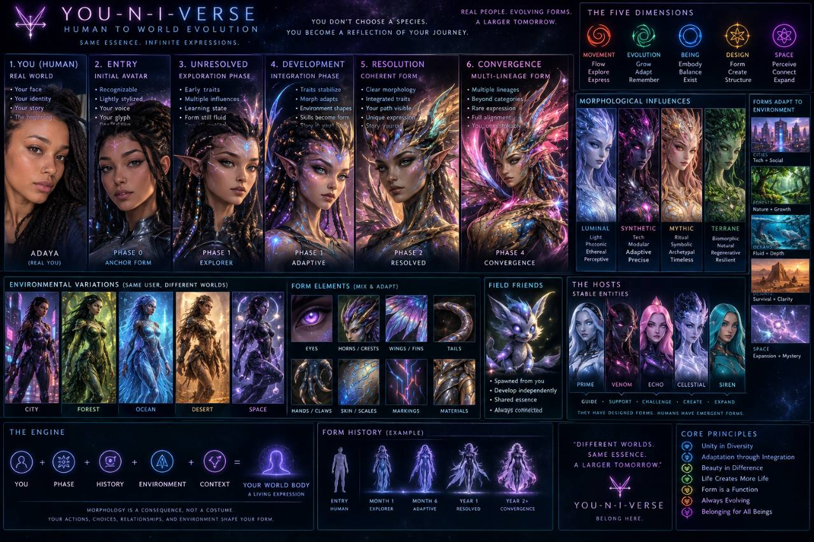

IDENTITY + INTERACTION
Same essence.
New expression.
Your base identity persists. Interactions add temporary states; your journey shapes longer-term growth.

YOUR JOURNEY • YOUR EVOLVING FORM
Explore. Make choices. Create conditions for each other to thrive.
Your form carries your history. Every new interaction is another possibility.
Visual reference artwork · live morph animation is not yet connected.
IDENTITY + INTERACTION
Your base identity persists. Interactions add temporary states; your journey shapes longer-term growth.
LIVING HISTORY
Complete an interaction to record the event and its five dimensional projections.

